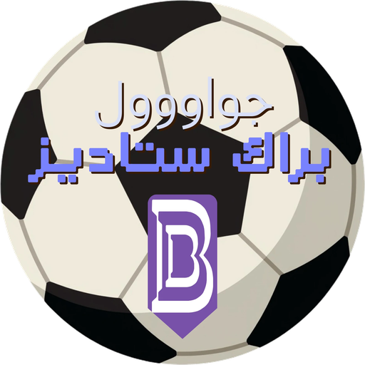

لوحة نتائج للملاعب التي ليس فيها لوحة نتائج.
ساعة، أهداف، بطاقات، إيقافات — على هاتف واحد، بلا حساب وبلا إنترنت.
حسابات أو تثبيتات. افتح الصفحة واضغط بدء. كل شيء يُحفظ على جهازك، وتبقى النتيجة إن أُغلق المتصفح.
خطوة تراجع. ضغطت هدفًا للفريق الخطأ؟ اضغط Z. الساعة لا تتأثر.
إيقاف اليد يعدّ مع ساعة اللعب فقط. يتوقف حين تتوقف المباراة، ويستمر عبر الاستراحة.
التنس يعرف القاعدة. شوط فاصل إلى سبع نقاط بفارق نقطتين، والإرسال يتبدّل بالدور دون أن تلمسه.
صوت واحد للمعلق في كل متصفح: مقاطع مسجّلة مسبقًا لا تتغيّر بتغيّر الجهاز.
| Space | تشغيل / إيقاف الساعة |
|---|---|
| 1 2 | هدف أو نقطة للأول / للثاني — Shift للإنقاص |
| Z | تراجع |
| T | وضع العرض على الشاشة الكبيرة |